Hi welcome to the Yorkshire County Cricket Website
This website has been created to help fans connect to the game, we have done this by creating an online booking system that you will be able to use.
In this booking system we will allow you to book a session at a batting nets to try and help you build your cricket skills,
as we belive currently in the world of cricket there is a lack of ways to get into the game or help you progress your skills.
So by doing this we can help people who want to play cricket who do not have the resources of doing so in terms of area or facilities,
by booking a session in a batting nets to help themselves and the local community thrive.
Upcoming Fixtures and Results
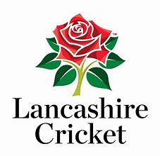Lancashire vs. Yorkshire
Emirates Old Trafford, Talbot Road, Manchester, M16 0PX
LV= Insurance County Championship
Result- Drawn
Lancashire 1st innings 276 all out HS- Jennings 119 BBF- Hill 6-26
Yorkshire 1st innings 255 all out HS- Kohler-Cadmore 51 BBF- Bailey 4-56
Lancashire 2nd innings 280-5 dec HS- Wells 124 BBF- Bess 3-84
Yorkshire 2nd innings 102-3 HS- Kohler-Cadmore 34* BBF- Hartley 2-27
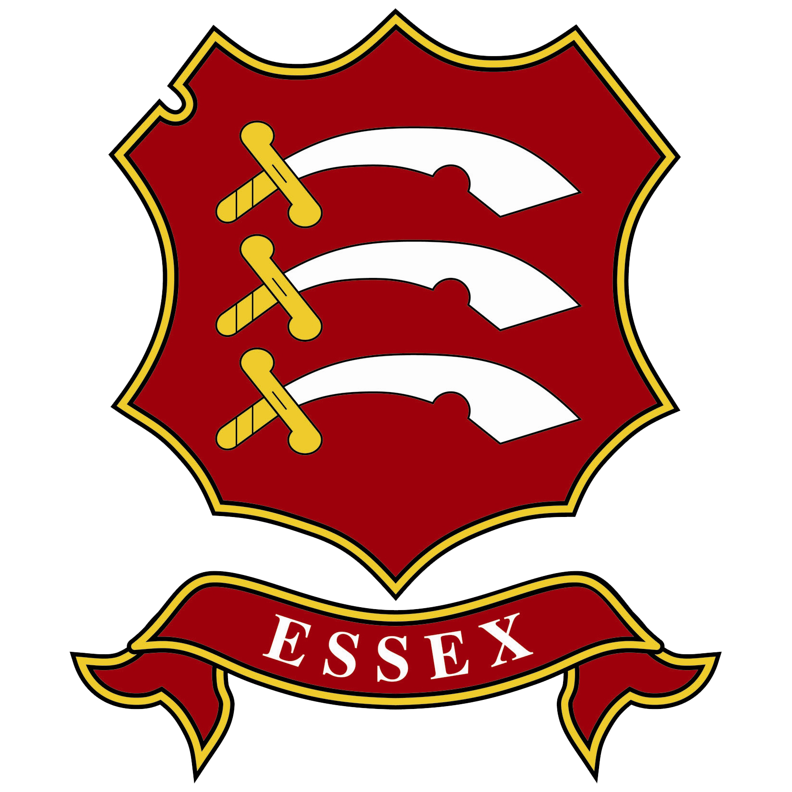Yorkshire vs. Essex
Headingley Cricket Ground, Leeds, LS6 3DP
LV= Insurance County Championship
Result- Essex Won by 1 Wicket
Yorkshire 1st innings 134 all out HS- Hill 36 BBF- Cook 3-31
Essex 1st innings 225 all out HS- Lawrence 61 BBF- Thompson 4-60
Yorkshire 2nd innings 252 all out HS- Coad 69 BBF- Porter 4-64
Essex 2nd innings 162-9 HS- Snater 65* BBF- Patterson 5-46
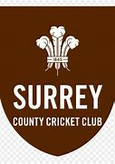Surrey vs. Yorkshire
Kia Oval, Kennington, London, SE11 5SS
LV= Insurance County Championship
Result- Surrey Won by 10 Wickets
Surrey 1st innings 333 all out HS- Pope 136 BBF- Patterson 4-69
Yorkshire 1st innings 179 all out HS- Kohler-Cadmore 55 BBF- Lawes 4-31
Yorkshire 2nd innings F/O 208 all out HS- Lyth 46 BBF- Worrall 4-61
Surrey 2nd innings 55-0 HS- Burns 30 BBF- Bess 0-7
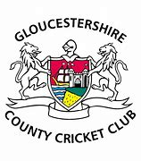Yorkshire vs. Gloucestershire
Headingley Cricket Ground, Leeds, LS6 3DP
LV= Insurance County Championship
Result- Gloucestershire Won by 18 runs
Gloucestershire 1st innings 190 all out HS- Bracey 71 BBF- Fisher 4-45
Yorkshire 1st innings 183 all out HS- Kohler-Cadmore 46 BBF- Zafar 5-40
Gloucestershire 2nd innings 233 all out HS- O Price 68 BBF- Hill 2-12
Yorkshire 2nd innings 222 all out HS- Bess 79* BBF- Zafar 4-69
Where to find us
Our Merchandise
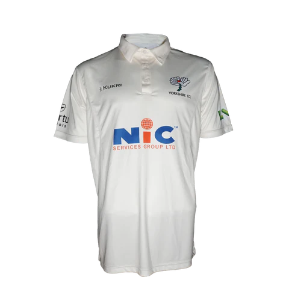Kukri Championship Shirt £50
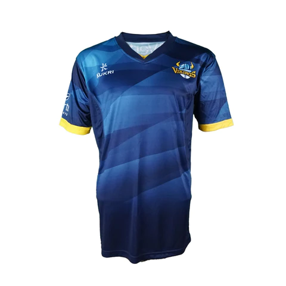Kukri One Day Shirt £50
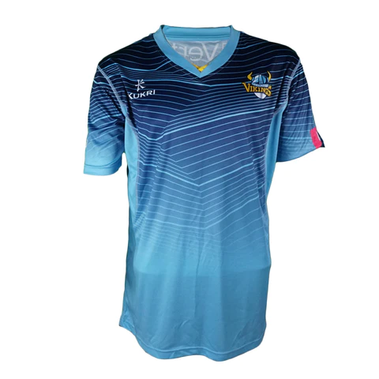Kukri T20 Shirt £50
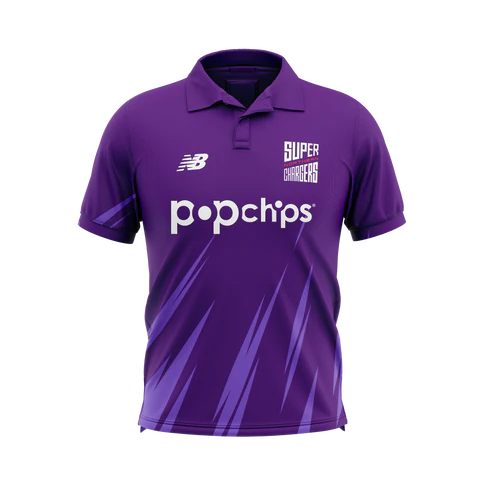Northen Superchargers Shirt £52
Visit Yorkshire ShopEngland Replicas
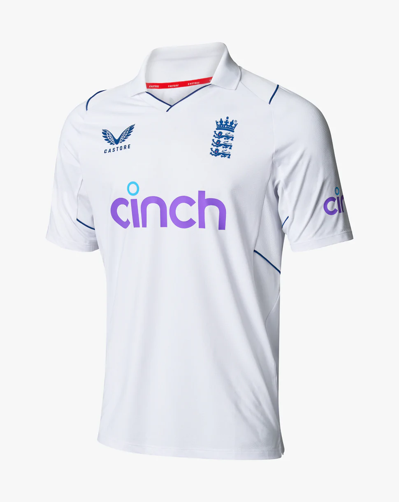England Test Shirt £60
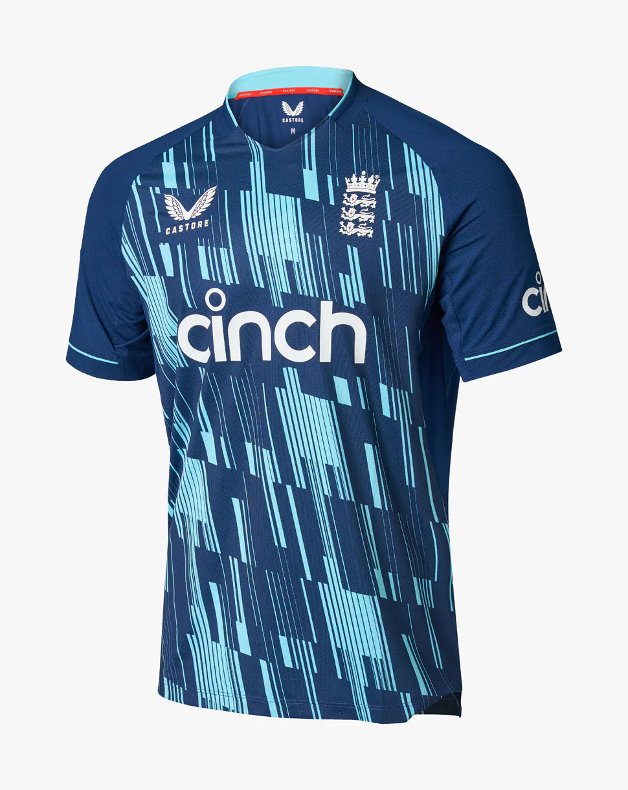England ODI Shirt £60
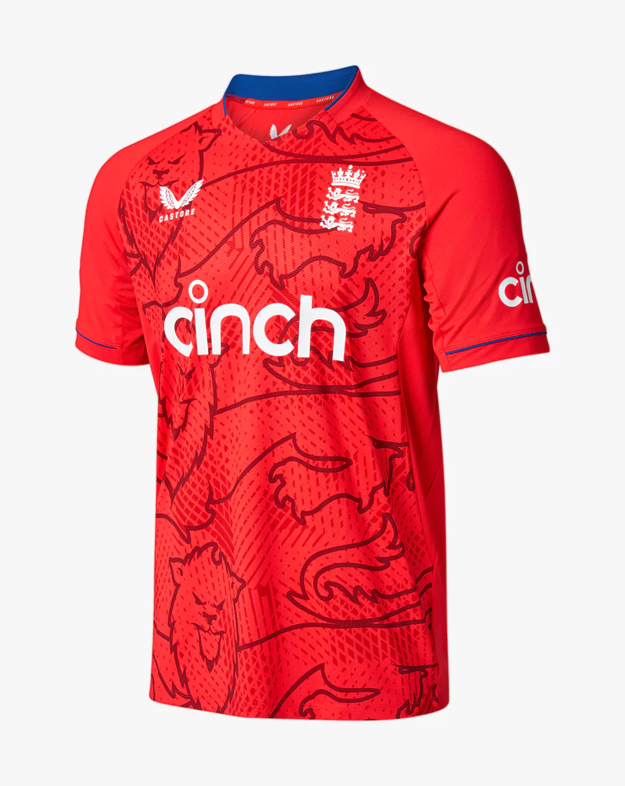England T20 Shirt £60
Visit England Shop